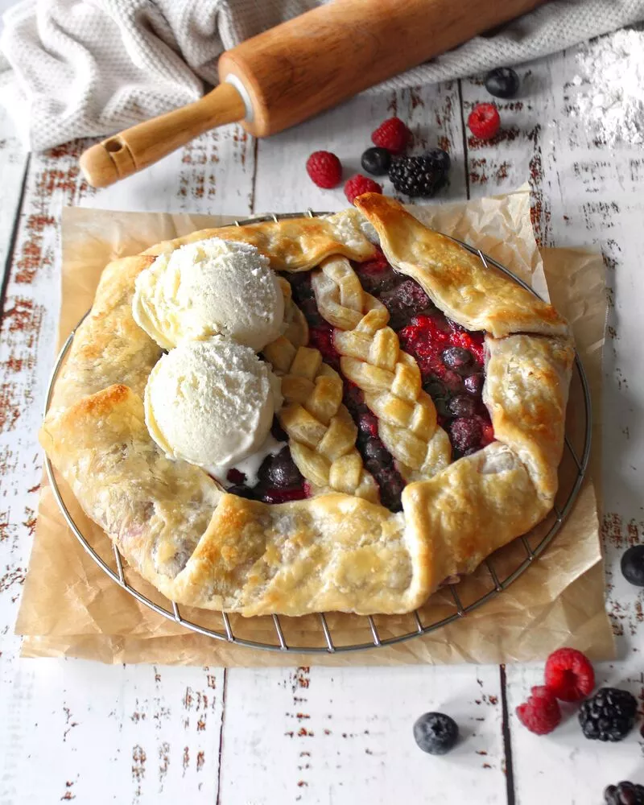

Fruit Galette

Mixed Berry Galette
INGREDIENTS
Crust
- 2 cups all-purpose flour, leveled
- 12 tablespoons butter, cold and cut into cubes
- 11 tablespoons ice cold water
Filling
- 6 ounces blueberries, washed
- 6 ounces blackberries, washed
- 6 ounces raspberries, washed
- tablespoon flour
- 1/ 3 cup granulated sugar
- 1 tablespoon lemon juice
Steps
- To make the dough, add the 2 cups of flour to a large bowl. Then, add the cold and thinly sliced butter and use a fork or a pastry cutter to combine it until crumbs form. Next, add 11 tbsp of the ice cold water and stir until a dough forms. Add an additional tablespoon if it seems to dry.
- Shape the dough into a thick disk, and wrap it with plastic wrap. Place it in the fridge to chill for 45 minutes.
- While the dough is chilling make your filling. Rinse the berries and place them in a medium bowl with the flour, sugar and lemon juice. Stir to combine, cover and set aside.
- Once your dough has chilled, roll it out on a floured surface until it’s about 1/4 in thick, creating a large area that you can trim down to about a 12-13 inch circle. Set the scraps aside to decorate the top, or store them in an air tight container to freeze and use again later.
- Place your circle of dough on a large sheet or pizza pan lined with parchment paper and preheat your oven to 400 degrees.
- Spread the berry filling onto the dough, leaving about 2-3 inches of empty space around the diameter. Fold this extra dough over the filling, and place your galette into the oven to bake for 30 minutes - or until the crust is golden brown. **I like to brush the crust with a little milk or egg wash before baking to help it get nice and golden.**
- Remove from the oven and let cool a bit before slicing and serving. Enjoy!